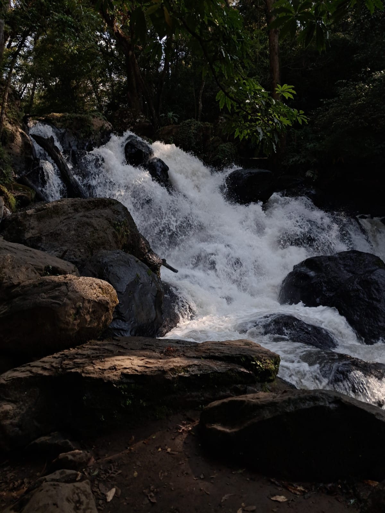
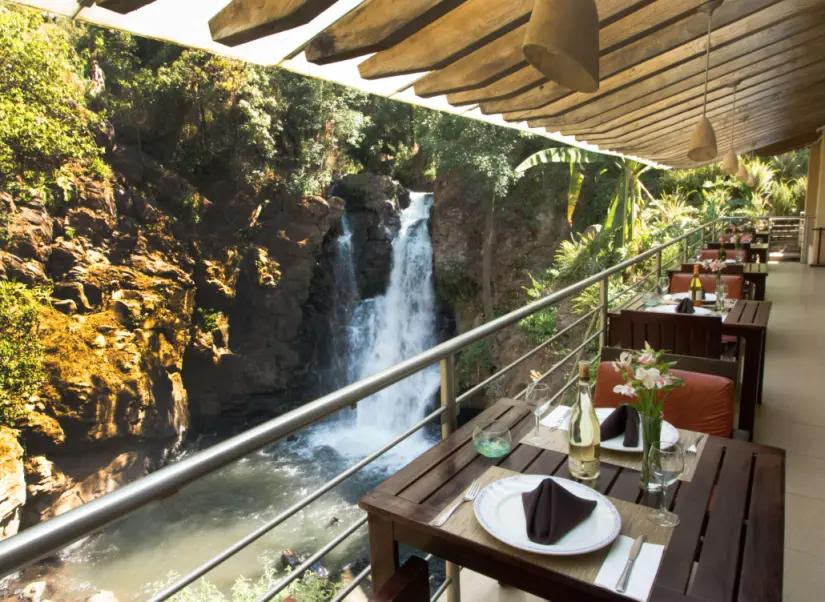

Descubre los paisajes naturales
Cascada Velo de Novia

La Cascada Velo de Novia es uno de los atractivos naturales más visitados de Valle de Bravo. Se encuentra en la zona de Avándaro y destaca por su impresionante caída de agua de aproximadamente 35 metros.
Su nombre se relaciona con la apariencia blanca del agua al descender por las rocas, semejante a un velo de novia. Está rodeada de árboles y vegetación que crean un ambiente ideal para disfrutar de la naturaleza.
Cascada Piedra de Molino

Piedra de Molino es un espacio natural donde el agua y las formaciones rocosas crean un paisaje atractivo. Su entorno está rodeado de vegetación y permite apreciar la riqueza natural de la región.
Este lugar ofrece la oportunidad de disfrutar de un ambiente tranquilo, observar el recorrido del agua y contemplar los paisajes boscosos característicos de Valle de Bravo.
Cascada Refugio del Salto

La Cascada Refugio del Salto es otro atractivo natural que permite conocer los paisajes y la vegetación de los alrededores de Valle de Bravo. Su entorno destaca por la presencia de árboles, rocas y corrientes de agua.
Durante la temporada de lluvias, el agua puede aumentar su caudal, haciendo que el paisaje sea aún más llamativo. Es un espacio que permite valorar la belleza natural y la importancia de cuidar el medio ambiente.